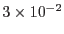
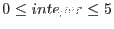

| Parameter | Mand | Type | Default | Constraints |
| entrystage (global) | no | choice | 1:events | 1:events  2:angles 3:filter 4:spectra 5:fluxing 6:lightcurve 2:angles 3:filter 4:spectra 5:fluxing 6:lightcurve |
The stage at which to begin processing.
|
| finalstage (global) | no | choice | 5:fluxing | 1:events 2:angles 3:filter 4:spectra 5:fluxing 6:lightcurve |
The last stage to process.
|
| withinstexpids (global) | no | boolean | false | |
On true: only the specified list of exposures (parameter
instexpids) are processed. On false: all Spectroscopy
exposures are processed.
|
| instexpids (global) | no | list of strings | | |
List of instrument-exposure identifiers. These take two possible
forms: a six-character string such as ``R1S001'' or the full
name of any ODF file related to the desired exposure.
Requires withinstexpids=true.
|
| orders (global) | no | list of integers | 1 2 |
|
Which reflection orders to process in the final two stages
(``spectra'' and ``fluxing'').
|
| withprefix (global) | no | boolean | false | |
A prefix string begins the name of every file written to or read
from the current working directory. On true: the specified prefix
string (parameter prefix) is enabled. On false: the PPS
prefix string is inferred from the ODF.
|
| prefix (global) | no | string | | |
Filename prefix string used in the current working directory.
Requires withprefix=true.
|
| expunge (global) | no | list of choices | events | events merged |
Which intermediate datasets may be deleted automatically.
|
| spectrumbinning | no | choice | lambda | lambda beta |
Spectrum binning type. Used to accumulate exposure maps and spectrum. Also used to calculate regions
|
| timestep (Stage1/atthkgen) | no | real | 1 | |
Time resolution in seconds on which to construct the spacecraft
attitude time-series file.
|
| driftlimit (Stage1/attfilter) | no | real | 5 | |
Threshold in arc minutes for filtering out time intervals in which
the spacecraft attitude drifted too far from the median.
|
| onlylastatt (Stage1/attfilter) | no | boolean | false | |
If true only the last attitude points (100) are taken for calculating
(median) the reference attitude for filtering.
|
| calcoffsets (Stage1/rgsoffsetcalc) | no | boolean | false | |
The energy calibrations require pulse-height offsets from the CCF.
Override values for these can be computed from the diagnostic data.
On true: offset overrides are computed and passed to
rgsenergy. On false: offset overrides are not computed.
|
| withoffsethistogram (Stage1/rgsoffsetcalc) | no | boolean | false | |
On true: the pulse-height distributions from the offset computation
are written to an output dataset. On false: the distributions are
discarded. Requires calcoffsets=true.
|
| withepicset (Stage1/rgssources) | no | boolean | false | |
On true: suitable entries from the specified EPIC catalog of
detected sources (parameter epicset) are added to the output
SRCLIST table. On false: no EPIC sources are added.
|
| epicset (Stage1/rgssources) | no | dataset | | |
An EPIC source list, such as produced by tasks emldetect
and
eboxdetect. Requires withepicset=true.
|
| withsrc (Stage1/rgssources) | no | boolean | false | |
On true: the specified source (parameters srclabel, etc.) is added to the output SRCLIST table and is
established as the primary source for subsequent analyses. On
false: there is no user-defined source and so rgssources
selects a primary source on its own, giving preference to the
Observation Proposal.
|
| srclabel (Stage1/rgssources) | no | string | USER | |
User-defined source: LABEL column value. This is the name
of the source; ideally it should be meaningful and convenient.
Requires withsrc=true.
|
| srcrate (Stage1/rgssources) | no | real | | |
User-defined source: RATE column value. This is the RGS
band brightness of the source in counts per second, and is used to
compute relative confusion between the sources. Requires withsrc=true.
|
| srcstyle (Stage1/rgssources) | no | choice | radec | radec wrtatt |
User-defined source: this parameter specifies how the source
position is to be defined. radec: celestial coordinates (parameters
srcra and srcdec). wrtatt: RGS angular coordinates
(parameters srcdisp and srcxdsp). This choice is
made persistent through the FIXED_ON_SKY column (set true
for celestial coordinates) so that subsequent changes to the
reference spacecraft attitude affect the derived coordinates but not
the defining coordinates. Requires withsrc=true.
|
| srcra (Stage1/rgssources) | no | real | -999 | |
User-defined source: RA column value. This is the right
ascension in decimal degrees. Mandatory when applicable.
Requires srcstyle=radec.
|
| srcdec (Stage1/rgssources) | no | real | -999 | |
User-defined source: DEC column value. This is the
declination in decimal degrees. Mandatory when applicable.
Requires srcstyle=radec.
|
| srcdisp (Stage1/rgssources) | no | real | | |
User-defined source: DELTA_DISP column value. This is the
dispersion-direction offset from the pointing axis, in arc minutes.
Requires srcstyle=wrtatt.
|
| srcxdsp (Stage1/rgssources) | no | real | | |
User-defined source: DELTA_XDSP column value. This is the
cross-dispersion-direction offset from the pointing axis, in arc
minutes. Requires srcstyle=wrtatt.
|
| attstyle (Stage1/rgssources) | no | choice | expmedian | expmedian start user |
Specifies the method to use for defining the reference spacecraft
attitude (pointing of the instrument). expmedian: calculated
from the attitude time-series file. start: start-of-exposure
attitude as given in the ODF. user: enables the specified attitude
(parameters attra, attdec and attapos).
|
| attra (Stage1/rgssources) | no | real | -999 | |
User-defined attitude: right ascension in decimal degrees.
Mandatory when applicable. Requires attstyle=user.
|
| attdec (Stage1/rgssources) | no | real | -999 | |
User-defined attitude: declination in decimal degrees.
Mandatory when applicable. Requires attstyle=user.
|
| attapos (Stage1/rgssources) | no | real | -999 | |
User-defined attitude: position angle in decimal degrees.
Mandatory when applicable. Requires attstyle=user.
|
| withdiagoffset (Stage1/rgsenergy) | no | boolean | false | |
On true: files included in the ODF (from 2004 on) contain averages of
diagnostic images over three consecutive orbits around the data. They are used
in this case for an offset subtraction pixel by pixel.
|
| withgain (Stage1/rgsenergy) | no | boolean | true | |
On true: calibration of the telemetered energy values includes the
gain correction. On false: gain correction is not performed.
|
| withcti (Stage1/rgsenergy) | no | boolean | true | |
On true: calibration of the telemetered energy values includes the
CTI correction. On false: CTI correction is not performed.
|
| badpixalgo (Stage1/rgsbadpix) | no | choice | badpixalgo | badpixalgo embadpixalgo |
User-defined bad pixels and column algorithm: this parameter specifies the algorithm to be used to determine
bad pixels and columns.
|
| embadpixalgo | no | boolean | no | |
Boolean parameter to enable the call the embadpixfind task to find
bad pixels and columns.
|
| keepcool | no | boolean | yes | |
If set to "no", columns showing often larger CTI will be flagged (taken
also from the CCF).
|
| withadvisory (Stage1/rgsbadpix) | no | boolean | true | |
The BADPIXnn tables are a compilation of all known bad pixel
locations. The choice of how to use this information to filter the
data is not made until the third stage of processing (``filter'').
On true: advisory (non-uplinked) bad pixels from the CCF are
included. On false: no advisory bad pixels.
|
| withfoundhot (Stage1/rgsbadpix) | no | boolean | true | |
On true: the telemetry is analyzed for pixels that appear to be hot
(frequently yielding spurious detections) according to criteria set
by the following parameters. Any such pixel locations are then
included in the BADPIXnn tables. On false: hot pixel
finding is disabled. Not applicable to HTR mode data.
|
| pixnoiselimit (Stage1/rgsbadpix) | no | integer | |
|
Hot pixel finding: lowest uncalibrated single-pixel energy to be
considered. Requires withfoundhot=true.
|
| pixsharpness (Stage1/rgsbadpix) | no | real | 5 | |
Hot pixel finding: sharpness criterion (see rgsbadpix
documentation). Requires withfoundhot=true.
|
| colnoiselimit (Stage1/rgsbadpix) | no | integer | 250 |
|
Hot column finding: lowest uncalibrated single-pixel energy to be
considered. Requires withfoundhot=true.
|
| colsharpness (Stage1/rgsbadpix) | no | real | 8 | |
Hot column finding: sharpness criterion (see rgsbadpix
documentation). Requires withfoundhot=true.
|
| reconstruct (Stage1/rgsevents) | no | boolean | true | |
On true: spatially adjacent events in the telemetered data are
combined into a single ``reconstructed'' event. On false: no event
reconstruction. Not applicable to HTR mode data.
|
| withdetcoord (Stage1/rgsevents) | no | boolean | false | |
On true: in addition to chip coordinates and angular coordinates,
detector coordinates for each event are added to the EVENTS
table. Parameter detcoord selects among the available
coordinate systems. On false: detector coordinates are omitted.
|
| detcoord (Stage1/rgsevents) | no | choice | cam | chip cam sac |
Specifies a standard XMM coordinate system for the output detector
coordinates. chip: CHIPCOORD with sub-pixel accuracy. cam:
CAMCOORD1. sac: SACCOORD. Requires withdetcoord=true.
|
| betabinning (Stage2/rgsangles) | no | choice | binSize | Range binSize |
Specifies how the dispersion channels are to be defined. Range:
interval to be subdivided (parameters betamin and
betamax) and number of channels. binSize: midpoint and
width of the first channel (parameters betabinref and
betabinwidth) and number of channels.
|
| betamin (Stage2/rgsangles) | no | real |
 | |
Lower boundary of the first dispersion channel, in radians.
Requires betabinning=Range.
|
| betamax (Stage2/rgsangles) | no | real |
| |
Upper boundary of the last dispersion channel, in radians.
Requires betabinning=Range.
|
| betabinref (Stage2/rgsangles) | no | real |
| |
Midpoint of the first dispersion channel, in radians.
Requires betabinning=binSize.
|
| betabinwidth (Stage2/rgsangles) | no | real |
| |
Dispersion channel width in radians.
Requires betabinning=binSize.
|
| nbetabins (Stage2/rgsangles) | no | integer | 3400 | |
Number of dispersion channels.
|
| lambdabinref | no | r | 4.005 | |
midpoint of bin for which LAMBDACHA is one [Angstrom]
|
| lambdabinwidth | no | r | 0.010 | |
width of lambda bin [Angstroms]
|
| nlambdabins | no | i | 3600 |  |
number of lambda bins.
|
| xdispbinning (Stage2/rgsangles) | no | choice | binSize | Range binSize |
Specifies how the cross-dispersion channels are to be defined.
Range: interval to be subdivided (parameters xdispmin and
xdispmax) and number of channels. binSize: midpoint and
width of the first channel (parameters xdispbinref and
xdispbinwidth) and number of channels.
|
| xdispmin (Stage2/rgsangles) | no | real |
| |
Lower boundary of the first cross-dispersion channel, in radians.
Requires xdispbinning=Range.
|
| xdispmax (Stage2/rgsangles) | no | real |
| |
Upper boundary of the last cross-dispersion channel, in radians.
Requires xdispbinning=Range.
|
| xdispbinref (Stage2/rgsangles) | no | real |
| |
Midpoint of the first cross-dispersion channel, in radians.
Requires xdispbinning=binSize.
|
| xdispbinwidth (Stage2/rgsangles) | no | real |
| |
Cross-Dispersion channel width in radians.
Requires xdispbinning=binSize.
|
| nxdispbins (Stage2/rgsangles) | no | integer | 170 | |
Number of cross-dispersion channels.
|
| withpointingcolumn (Stage2/rgsangles) | no | boolean | false | |
On true: the spacecraft attitude (pointing of the instrument) for
each event is added to the EVENTS table. On false: the
attitude is omitted.
|
| withmlambdacolumn (Stage2/rgsangles) | no | boolean | false | |
On true: the primary source for each event is added to
the EVENTS table. On false: the is omitted.
|
| withheliocentriccorr | no | b | Yes | |
Corrects column from heliocentric velocity
|
| withsunanglecorr | no | b | Yes | |
Corrects column from Sun angle correction
|
| auxgtitables (Stage3/rgsfilter) | no | list of tables | | |
List of OGIP compliant auxiliary GTI tables for filtering the event
list in conjunction with its internal STDGTI0n tables.
|
| withcombmap (Stage3/rgsfilter) | no | boolean | true | |
rgsfilter
produces a filtered exposure map separately for
each node, as required by various tasks in the following stages, but
a combined map is more convenient to look at and has various uses.
On true: the combined exposure map is written to an output dataset.
On false: no combined exposure map.
|
| driftbinsize (Stage3/rgsfilter) | no | real | 1 | |
Size in arcseconds of the square bins used to group frames according
to their aspect drift in dispersion and cross-dispersion. Grouping
improves the speed of constructing the exposure maps, at a slight
cost in accuracy.
|
| rejflags (Stage3/rgsfilter) | no | list of choices | BAD_SHAPE ON_NODE_INTERFACE ON_BADPIX NEXT_TO_BADPIX
ON_WINDOW_BORDER BELOW_ACCEPTANCE | BAD_SHAPE ON_NODE_INTERFACE ON_BADPIX
NEXT_TO_BADPIX ON_WINDOW_BORDER BELOW_ACCEPTANCE |
List of rejection flags for filtering the event list.
|
| spatialres (Stage4/rgsregions) | no | integer | 5 | |
Dispersion-axis spacing of vertices for image regions and the
background region, specified as the number of vertices across a
node. Not applicable to HTR mode data.
|
| orderres (Stage4/rgsregions) | no | integer | 3 | |
Dispersion-axis spacing of vertices for order regions, specified as
the number of vertices across a node.
|
| xpsfincl (Stage4/rgsregions) | no | real | 90 |
|
Size of image regions, specified by the percentage of the
cross-dispersion PSF covered between each pair of vertices with the
same dispersion coordinate. Not applicable to HTR mode data.
|
| xpsfexcl (Stage4/rgsregions) | no | real | 95 |
|
Size of the exclusion regions in the background region, specified by
the percentage of the cross-dispersion PSF covered between each pair
of vertices with the same dispersion coordinate and associated
source. Not applicable to HTR mode data.
|
| pdistincl (Stage4/rgsregions) | no | real | 90 |
|
Size of order regions, specified by the percentage of the
pulse-height distribution covered between each pair of vertices with
the same dispersion coordinate.
|
| procsrcsexpr (Stage4/rgsregions) | no | string | INDEX==#PRIMESRC | |
Selection expression indicating which sources to process for image
and order regions. The default specifies the primary source only.
When restarting rgsproc
on its own output, leave this
parameter blank to accept the selections already in place.
|
| exclsrcsexpr (Stage4/rgsregions) | no | string | INDEX==#PRIMESRC | |
Selection expression indicating which sources to exclude from the
background region. The default specifies the primary source only.
When restarting rgsproc
on its own output, leave this
parameter blank to accept the selections already in place.
Not applicable to HTR mode data.
|
| bkgcorrect (Stage4/rgsspectrum) | no | boolean | no | |
On true: background-correction is applied to all source spectra.
On false: no background correction.
|
| withbkgset (Stage4/rgsspectrum) | no | boolean | true | |
On true: a background spectrum is produced for each source spectrum.
On false: no background spectra.
|
| rebin (Stage4/rgsspectrum) | no | integer | 1 | |
Channel rebinning factor. The events and exposure are rebinned
going into the histogram, which gives a more stable result than if
the full-resolution spectrum is rebinned later (a very minor point).
|
| withfracexp (Stage4/rgsspectrum) | no | boolean | no | |
Enables addition of the non-standard (but harmless)
FRAC_EXP column to the output spectra. This is the
fraction of full exposure in each channel.
|
| withbackgroundmodel (Stage4/rgsspectrum) | no | boolean | no | |
On true: a background template model spectrum is produced. See
rgsbkgmodel
for details.
On false: no background template model is produced.
|
| exposed (Stage4/rgsspectrum) | no | real | 0.1 | 0-1 |
Channels with less than this fraction of full exposure are marked
as bad in the output QUALITY column.
|
| edgechannels (Stage4/rgsspectrum) | no | integer | 2 | |
The number of channels at the edges of each chip to be marked as
bad in the output QUALITY column. For reasons not well
understood at this time, the two channels at either edge of every
chip do not seem to be properly calibrated.
|
| badquality (Stage4/rgsspectrum) | no | integer | 1 | 0-5 |
The QUALITY column value used to indicate a bad channel.
The default causes bad channels to be discarded automatically by
XSPEC. Advanced users of XSPEC may prefer to change this for
diagnostic purposes.
|
| withheliocorr (Stage4/rgsspectrum) | no | boolean | no | |
On true: heliocentriccorr task is executed, writing the VHELICOR
keyword in the spectrum header.
|
| witharffile (Stage5/rgsrmfgen) | no | boolean | no | |
On true: rgsrmfgen will create two independent ARF and RMF files.
|
| rmfbins (Stage5/rgsrmfgen) | no | integer | 4000 | |
Number of rows (incident-energy bins) in the response matrices:
effectively the energy resolution. The columns match the channel
space of the spectra. The default is fine for general purposes, but
very slow to compute; 250 is adequate when only fluxing is intended.
|
| fftdim (Stage5/rgsrmfgen) | no | integer | 3 |
|
The wings of the various distributions that are convolved together
to form the narrow features of the line-spread function are
truncated to limit the size of the convolution space. An increment
of one in this parameter doubles the size of the convolution space;
the larger the convolution space, the slower the computation and the
less power is lost to the truncation. The default is fine for
general purposes, but 1 is adequate when only fluxing is intended.
|
| withmirrorpsf (Stage5/rgsrmfgen) | no | boolean | yes | |
On true: the standard mirror PSF distribution from the CAL is
included in the LSF. On false: the mirror PSF is not included. The
option to disable the standard mirror PSF is provided primarily for
use with extended sources and a custom angular distribution that
implicitly contains the mirror PSF.
|
| withdynefferea (Stage5/rgsrmfgen) | no | boolean | yes | |
On true: execute rgsrmfgen using the dynamic effective area correction based on Chebyshev parameters.
|
| withrectification | no | boolean | no | |
Use empirical RGS effective area correction
|
| witheffectiveareacorrection | no | boolean | no | |
Use RGS effective area correction
|
| withangdist (Stage5/rgsrmfgen) | no | boolean | no | |
On true: the user-defined angular distribution is included in the
LSF. On false: it is not included. This option is provided for the
purposes of extended-source analysis, but the imaginative user may
find other applications for it.
|
| angdistset (Stage5/rgsrmfgen) | no | file | angdist.txt | |
An ASCII formatted distribution in RGS dispersion offset angle, for
use in generating a customized LSF, presumably for an extended
source. See rgsrmfgen
for details on the file format.
Requires withangdist=true.
|
| mergeorders (Stage5/rgsfluxer) | no | boolean | false | |
On true: all the spectra (both instruments, all exposures and
reflection orders) are combined together in a single fluxed
spectrum. On false: a separate fluxed spectrum is produced for each
reflection order.
|
| flxformat (Stage5/rgsfluxer) | no | choice | dal | dal ascii qdp |
Specifies the format of the output fluxed spectrum. dal:
FITS-encoded SAS dataset. ascii: basic ASCII-encoded text file.
qdp: text file formatted as input to qdp.
|
| flxmode (Stage5/rgsfluxer) | no | choice | wavelength | wavelength energy |
Specifies the units for defining the output fluxing bins (parameters
flxmin and flxmax). wavelength: units of Å.
energy: units of keV.
|
| flxmin (Stage5/rgsfluxer) | no | real | 4 | |
Lower edge of the first output bin in the units set by
flxmode. The default is not appropriate for
flxmode=energy.
|
| flxmax (Stage5/rgsfluxer) | no | real | 39 | |
Upper edge of the last output bin in the units set by
flxmode. The default is not appropriate for
flxmode=energy.
|
| flxbins (Stage5/rgsfluxer) | no | integer | 3400 | |
Number of output bins.
|
| flxquality (Stage5/rgsfluxer) | no | list of integers | |
 |
This parameter controls how the quality flags from the input
spectrum files are propagated into the output fluxed spectrum. If
the quality flag of an input spectral channel is not represented in
this list, the associated count rate is simply discarded. Where
multiple channels, either from the same or from different spectra,
overlap the same output bin, the output quality is degraded to the
worst input quality. This ranking is set by the order of the list
itself: from highest quality to lowest. Thus the list ``0 2 1''
preserves all input channels and degrades the quality in the
sequence, ``good'' to ``dubious'' to ``bad''. The default preserves
only the ``good'' channels. When only one quality value is
permitted, the quality column is omitted from the output
file. Quality flags three, four and five are defined within XSPEC,
but are not currently used by rgsspectrum.
|
| withflxnan (Stage5/rgsfluxer) | no | boolean | false | |
Undefined flux values naturally occur at spectral channels where
there is no exposure, such as in the gaps between chips, and are
represented by NaN (IEEE standard encoding). Sadly, many standard
analysis packages do not react well to this. On true: all instances
of NaN in the output are replaced with the specified finite
alternative (parameter flxnan). On false: NaN is permitted
in the output.
|
| flxnan (Stage5/rgsfluxer) | no | real | | |
Value used instead of NaN (or ``no'', in the case of
flxformat=qdp) to indicate an undefined value in the
output fluxed spectrum. Requires withflxnan=true.
|
| timebinsize | no | 1000 | real | |
Size of time bins.
|
| withbkgsubtraction | no | bool | no | |
Enable background subtraction
|
| Parameter | Mand | Type | Default | Constraints |